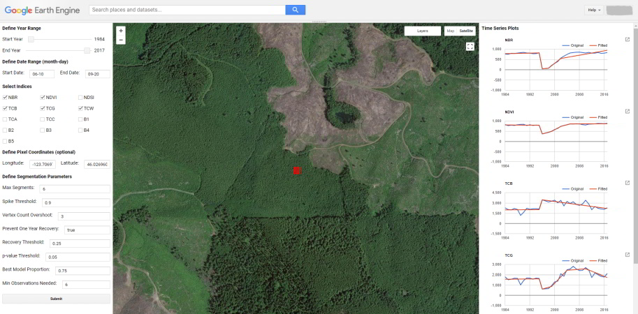
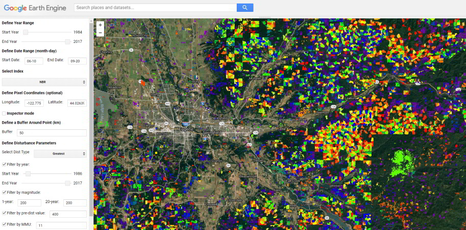
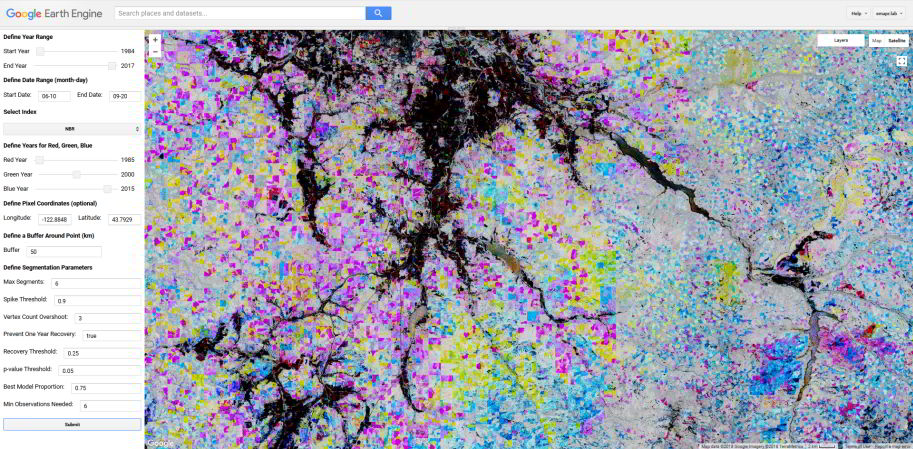
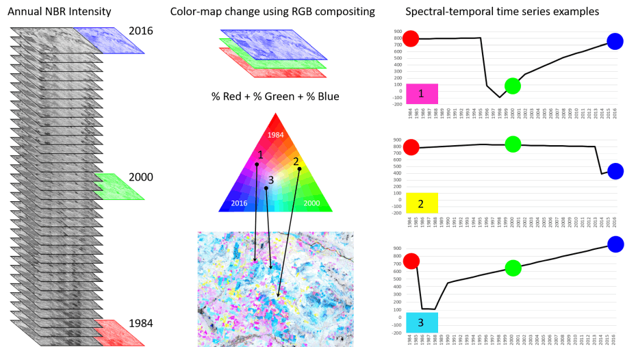

8 UI Applications
We have developed a few UI applications for exploring LT-GEE time series data. They can be found in our public GEE repository. To access the applications, visit this URL: https://code.earthengine.google.com/?accept_repo=users/emaprlab/public). It will add the users/emaprlab/public repository to your GEE account. Once added, the repository can be found within the Reader permission group of your GEE scripts library. There you’ll find the following user interface applications.
- UI LandTrendr Pixel Time Series Plotter | plot source and LandTrendr-fitted data for a pixel
- UI LandTrendr Disturbance Mapper | map disturbances and view attributes
- UI LandTrendr Fitted Index Delta RGB Mapper | visualize change and relative band/index information
8.1 UI LandTrendr Pixel Time Series Plotter
The UI LandTrendr Pixel Time Series Plotter will plot the Landsat surface reflectance source and LandTrendr-fitted index for a selected location. The script is useful for simply exploring and visualizing the spectral-temporal space of a pixel, for comparing the effectiveness of a series of indices for identifying landscape change, and for parameterizing LandTrendr to work best for your study region.

8.1.1 Steps
- Click on the script to load it and then click the Run button to initialize the application.
- Drag the map panel to the top of the page for better viewing.
- Define a year range over which to generate annual surface reflectance composites.
- Define the date range over which to generate annual composites. The format is (month-day) with two digits for both month and day. Note that if your study area is in the southern hemisphere and you want to include dates that cross the year boundary to capture the summer season, this is not possible yet - it is on our list!
- Select spectral indices and bands to view. You can select or or many.
- Optionally define a pixel coordinate set to view the time series of, alternatively you’ll simply click on the map. Note that the coordinates are in units of latitude and longitude formatted as decimal degrees (WGS 84 EPSG:4326). Also note that when you click a point on the map, the coordinates of the point will populate these entry boxes.
- Define the LandTrendr segmentation parameters. See the LT Parameters section for definitions.
- Either click a location on the map or hit the Submit button. If you want to change anything about the run, but keep the coordinate that you clicked on, just make the changes and then hit the Submit button - the coordinates for the clicked location are saved to the pixel coordinates input boxes.
Wait a minute or two and plots of source and LandTrendr-fitted time series data will appear for all the indices you selected. The next time you click a point or submit the inputs, any current plots will be cleared and the new set will be displayed.
8.1.2 Under the hood
- Collection building is same as that described in the example scripts
- Landsat 8 is transformed to the properties of Landsat 7 using slopes and intercepts from reduced major axis regressions reported in Roy et al 2016 Table 2
- Masking out clouds, cloud shadows, and snow using CFMASK product from USGS
- Medoid annual compositing
8.2 UI LandTrendr Disturbance Mapper
The UI LandTrendr Disturbance Mapper will display map layers of disturbance attributes including: year of disturbance detection, magnitude of disturbance, duration of disturbance, and pre-disturbance spectral value.

8.2.1 Steps
- Click on the script to load it and then click the Run button to initialize the application.
- Drag the map panel to the top of the page for better viewing.
- Define a year range over which to identify disturbances - best to set this close to the maximum range, you can filter disturbances by year in a different setting below.
- Define the date range over which to generate annual composites. The format is (month-day) with two digits for both month and day Note that if your study area is in the southern hemisphere and you want to include dates that cross the year boundary to capture the summer season, this is not possible yet - it is on our list!
- Select spectral index or band to use for disturbance detection.
- Optionally define a pixel coordinate set to define the center of the disturbance map, alternatively you’ll simply click on the map. Note that the coordinates are in units of latitude and longitude formatted as decimal degrees (WGS 84 EPSG:4326). Also note that when you click a point on the map, the coordinates of the point will populate these entry boxes.
- Define a buffer around the center point defined by a map click or provided in the latitude and longitude coordinate boxes from step 6. The units are in kilometers. It will draw and clip the map to the bounds of the square region created by the buffer around the point of interest.
- Define the disturbance type you are interested in - this applies only if there are multiple disturbances in a pixel time series. It is a relative qualifier among a series of disturbances for a pixel time series.
- Optionally filter disturbances by the year of detection. Adjust the sliders to constrain the results to a given range of years. The filter is only applied if the Filter by Year box is checked.
- Optionally filter disturbances by magnitude. Magnitude filtering is achieved by interpolation of a magnitude threshold from 1 year to 20 years. Define the magnitude threshold considered a disturbance for disturbances that are one year in duration and also 20 years in duration. If you want to apply the same threshold value across all durations, enter the same value in each box. The values should be the minimum spectral delta value that is considered a disturbance. They should be the absolute value and multiplied by 1000 for decimal-based surface reflectance bands and spectral indices (we multiply all the decimal-based data by 1000 so that we can convert the data type to signed 16-bit and retain some precision). The filter is only applied if the Filter by Magnitude box is checked.
- Optionally filter by pre-disturbance spectral value. This filter will limit the resulting disturbances by those that have a spectral value prior to the disturbance either greater/less then (depending on index) or equal to the defined value. The units are a of the spectral index selected for segmentation and should be scaled by 1000 (if you are you only want disturbances that had an NBR value of 0.4 prior to disturbance, you would set this parameter to 400). The filter is only applied if the Filter by Pre-Dist Value box is checked.
- Optionally filter by a minimum disturbance patch size, as defined by 8-neighbor connectivity of pixels having the same disturbance year of detection. The value is the minimum number of pixel in a patch. The filter is only applied if the Filter by MMU box is checked.
- Define the LandTrendr segmentation parameters. See the LT Parameters section for definitions.
Inspector mode selector. In the center top of the map there is a check box for whether to interact with the map in Inspector mode or not. When inspector mode is activated, map clicks engage the GEE Inspector functionality so that you can explore map layer values for a point (see the Inspector tab). When deactivated, a map click will start mapping disturbances for the region surrounding the clicked point.
8.2.2 Under the hood
- Collection building is same as that described in the example scripts
- Landsat 8 is transformed to the properties of Landsat 7 using slopes and intercepts from reduced major axis regressions reported in Roy et al 2016 Table 2
- Masking out clouds, cloud shadows, and snow using CFMASK product from USGS
- Medoid annual compositing
8.2.3 ToDo
- Option to export the map layers
- Allow input of a user drawn area or import of a feature asset or fusion table
- auto stretch to different indices - right now it is defaulting stretch for NBR
- Force absolute value for magnitude filter inputs
- Handle input of unscaled decimal values for the pre-dist and magnitude filter parameters
8.3 UI LandTrendr Fitted Index Delta RGB Mapper
The UI LandTrendr Fitted Index Delta RGB Mapper will display an RGB color map representing spectral band or index values at three time slices. Formally, it is referred to as write function memory insertion change detection. Each color red, green, and blue are assigned a year of spectral data, then those data are composited to an RGB image where each of red, green, and blue are mixed by weighting of the spectral intensity for the year represented by each color. It is useful as a quick way to visualize change or non-change over time along with providing a relative sense for spectral intensity. If I’m just exploring change in an area, I’ll often use this before strictly mapping disturbance, because I get a sense for spectral distribution and spatial pattern. Once you get a handle on interpreting the colors it is really quite an interesting and useful visualization.

The following figure is a guide to help interpret the colors.

8.3.1 Steps
- Click on the script to load it and then click the Run button to initialize the application.
- Drag the map panel to the top of the page for better viewing.
- Define a year range over which to identify disturbances - best to set this close to the maximum range, you can filter disturbances by year in a different setting below.
- Define the date range over which to generate annual composites. The format is (month-day) with two digits for both month and day Note that if your study area is in the southern hemisphere and you want to include dates that cross the year boundary to capture the summer season, this is not possible yet - it is on our list!
- Select spectral index or band to use for segmentation and change detection.
- Define years to represent red, green, and blue color in the final RGB composite.
- Optionally define a pixel coordinate set to define the center of the disturbance map, alternatively you’ll simply click on the map. Note that the coordinates are in units of latitude and longitude formatted as decimal degrees (WGS 84 EPSG:4326). Also note that when you click a point on the map, the coordinates of the point will populate these entry boxes.
- Define a buffer around the center point defined by a map click or provided in the latitude and longitude coordinate boxes from step 6. The units are in kilometers. It will draw and clip the map to the bounds of the square region created by the buffer around the point of interest.
- Define the LandTrendr segmentation parameters. See the LT Parameters section for definitions.
- Either click on the map or hit the Submit button to draw the map - wait a few minutes for the process to complete.
8.3.2 Under the hood
- Collection building is same as that described in the example scripts
- Landsat 8 is transformed to the properties of Landsat 7 using slopes and intercepts from reduced major axis regressions reported in Roy et al 2016 Table 2
- Masking out clouds, cloud shadows, and snow using CFMASK product from USGS
- Medoid annual compositing
- 2 standard deviation stretch on the selected band or spectral index